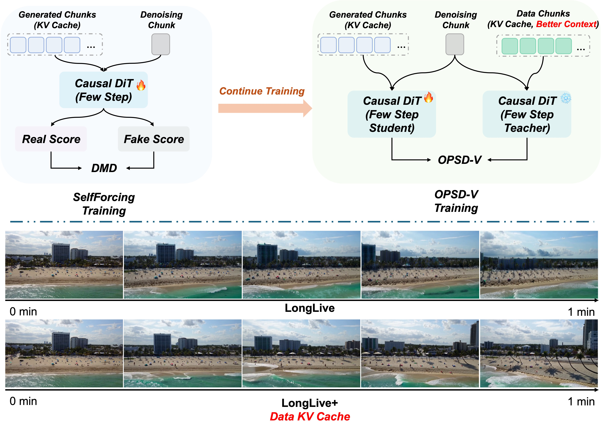
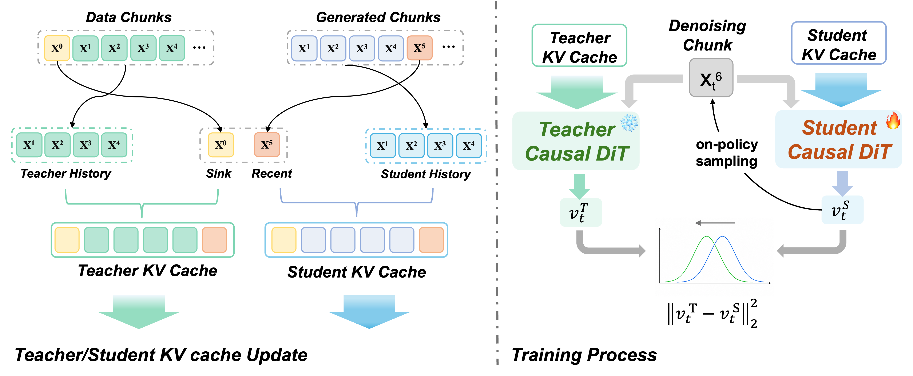

Less accumulated visual drift.
Comparison Gallery
We apply OPSD-V as continued post-training to both LongLive and Self-Forcing. Under matched prompts, seeds, samplers, and cache settings, the comparisons below show three complementary gains: reduced long-horizon visual degradation, stronger sustained motion, and improvements in both quality and dynamics. Both the base models and OPSD-V use attention sink during inference. Click any prompt below a video to read its complete long-form description, or use side-by-side fullscreen to inspect larger videos.
Stronger sustained motion.
Both benefits in one rollout.
Abstract
Efficient autoregressive video generators can produce long videos with low latency, but imperfect generated chunks are repeatedly written into the KV cache, degrading every subsequent temporal state. OPSD-V lets the student follow the exact inference-time rollout and receive dense supervision on its own generated cache states. In parallel, an EMA teacher is evaluated at the same student-visited denoising states using a cleaner temporal cache, where older history is replaced by real-video context and the latest generated chunk is retained. This cache-aware on-policy design improves long-horizon visual quality and motion dynamics without changing the original few-step inference path.
Motivation
The top of the figure positions OPSD-V after few-step distillation: starting from a DMD/Self-Forcing-trained causal video generator, we continue training the same few-step model instead of changing its deployment-time sampler. The central difficulty is autoregressive cache degradation. Every generated chunk is written back into the KV cache, so its errors become part of the temporal state used to produce all later chunks.
Design principle
Keep the student on-policy. Give the teacher a cleaner view.

Method
The student follows the exact deployment rollout. At each denoising state it visits, the teacher provides a corrective velocity target from a cleaner temporal context without replacing the student's trajectory.

Roll out on-policy
The student uses the original few-step sampler and writes its own generated chunks into the evolving KV cache.
Build a cleaner teacher context
Older history comes from real long-video chunks, while the latest generated chunk is retained for AR-consistent continuation.
Align velocity densely
Student and EMA teacher predict velocity at aligned noisy states. Each loss is backpropagated immediately to bound activation memory.
Quantitative
Average results over 240 one-minute videos from MovieGenBench and MeiBench. All methods use the same 1.3B backbone, few-step sampling path, and attention-sink cache mechanism.
| Method | Params | NFE | Quality | Dynamics | Semantic | User Pref. |
|---|
Ablations
Two implementation choices are decisive: supervise velocity rather than reconstructed x0, and keep the denoising trajectory student-induced. Use side-by-side fullscreen on each ablation pair to inspect the larger videos.
Match velocity, not reconstructed x0.
Velocity supervision better preserves fine structures and long-horizon clarity. Each clip below shows only the first 25 seconds for faster inspection.
Example 01
Long bridge construction
x0 Loss
Velocity Loss
Example 02
Train crossing a bridge
x0 Loss
Velocity Loss
Keep the student trajectory on-policy.
Training debug rollouts show the mismatch directly: the teacher branch remains coherent, while the student collapses into blur when supervised along teacher-induced states. Each clip shows the first 5 seconds.
Debug step 56
Training rollout
Student
Teacher
Debug step 80
Training rollout
Student
Teacher